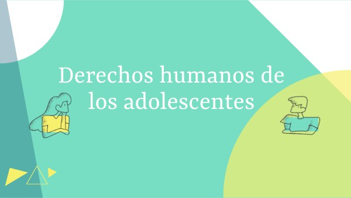

Derechos Humanos en Adolescentes
Adaptados a las necesidades, características y realidades de las personas adolescentes y jóvenes (aproximadamente entre 12 y 24 años). Estos derechos están respaldados por la Declaración Universal de los Derechos Humanos, la Convención sobre los Derechos del Niño (CDN) y otros tratados internacionales. .
Te protegen del abuso, garantizan que puedas estudiar, ser escuchado y crecer en un entorno sano y seguro, así los jóvenes entienden que están en una etapa crucial de desarrollo. Reconocer y garantizar sus derechos promueve su bienestar integral, previene abusos y les permite construir un futuro más justo, activo y saludable.
Ana Can Luch (9) Andrea Rabanales Arreci (27) Abigail Orantes (25)